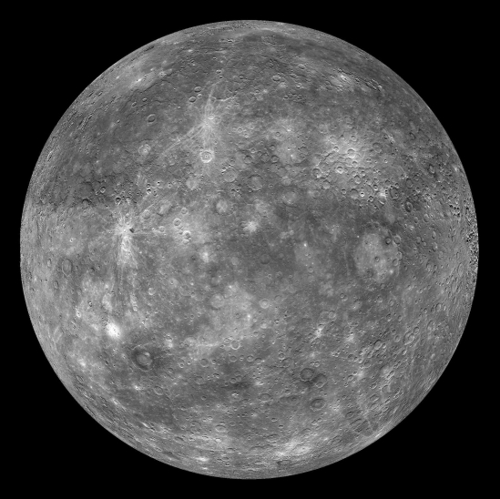
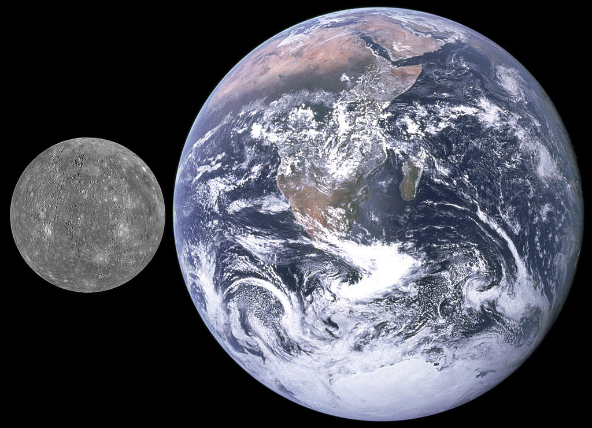

Mercury
Mercury is the first planet away from the Sun and is the smallest planet in our solar system, being slightly larger than our moon. It has a rocky terrain that can reach 800 degrees Fahrenheit in the day time and -290 degrees Fahrenheit at night! Since Mercury is the closet planet to the sun, it takes 88 Earth days to go around it.
Did You Know?
Mercury
Mercury is the first planet away from the Sun and is the smallest planet in our solar system, being slightly larger than our moon. It has a rocky terrain that can reach 800 degrees Fahrenheit in the day time and -290 degrees Fahrenheit at night! Since Mercury is the closet planet to the sun, it takes 88 Earth days to go around it.
Did You Know?
- It has a very thin atmosphere
- it has no moons nor rings
- A day on Mercury takes 59 Earth days.

Mercury in color

Mercury (basic)

Mercury compared to Earth